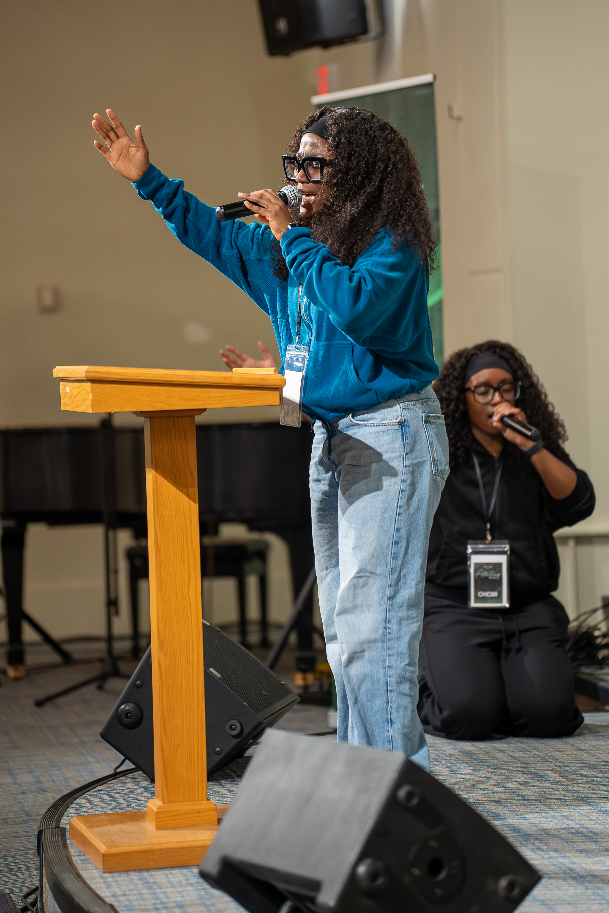
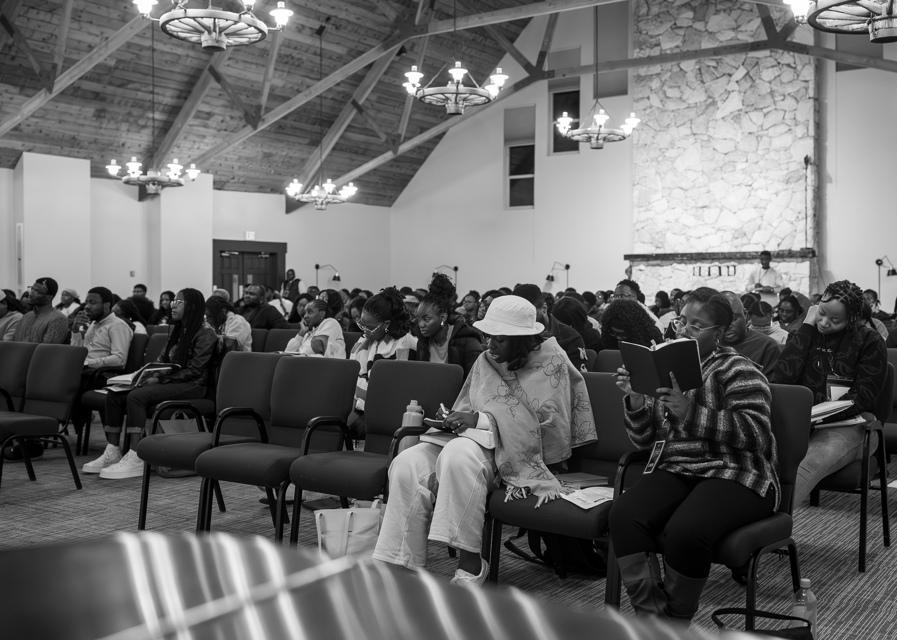
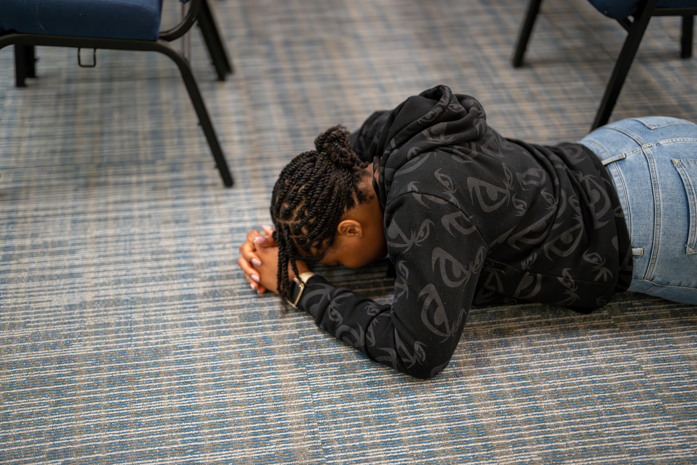
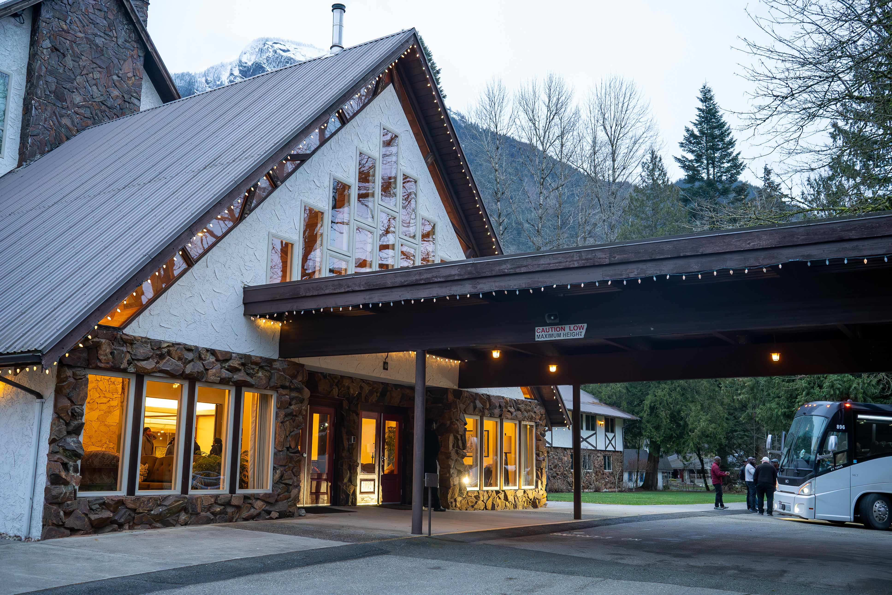

50
Days
16
Hours
30
Mins
26
Secs
Three days of fasting, prayer, worship & teaching of the word open to all believers, across all nations of the world.
Register Here →The Awaiting Retreat 2026 continues the legacy of CMAN's annual spiritual gatherings dedicated to consecration, transformation, and deeper intimacy with God. Hosted once again at Camp Hope in British Columbia, this edition centers on The New, a call to spiritual renewal and divine repositioning as revealed in Luke 5:36–39.
Over the course of three days, participants will engage in worship, prayer, teaching, and personal devotion designed to realign hearts with the leading of the Holy Spirit. Whether attending for the first time or returning from previous editions, participants can expect a spiritually immersive environment marked by clarity, renewal, and life-changing encounters.
A deep spiritual renewal, transformation, and fresh outpouring of God's Spirit through the lens of Luke 5:36–39.




We recognize that not everyone who desires to attend The Awaiting Retreat may have the financial means to do so. If you are in a position to assist, your contribution can help cover the cost of accommodation for someone else.
By giving, you're making it possible for more people to fully participate in this time of spiritual renewal and reflection. Every donation is deeply appreciated.
Give Here →Attend The Awaiting Retreat near you or plan to travel to a nearby city